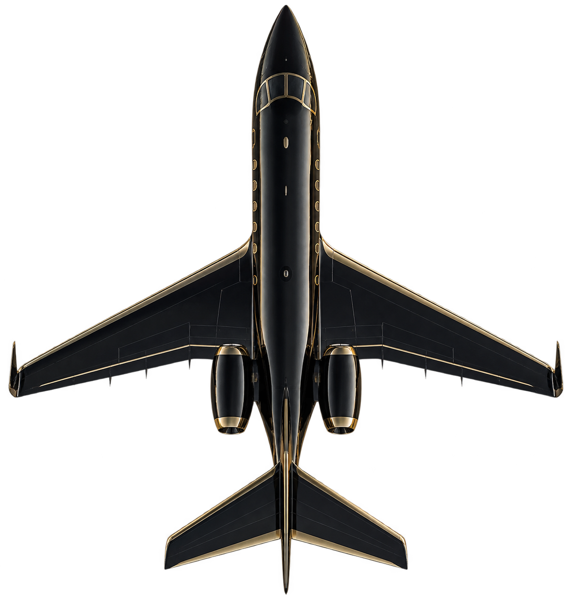
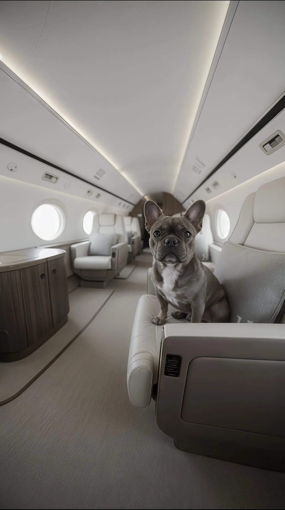

AURELIS
“01 — BUSINESS
移動する時間が、
自分の時間に変わりました。
打ち合わせの続く日々の中で、空の上だけは静かに考えられる。予定に合わせて飛べる自由が、旅そのものの意味を変えてくれました。
K. TAKAHASHITOKYO → SINGAPORE
YOUR TIME. YOUR SKY.
出発の時刻も、行き先も、
機内での過ごし方も。
あなたの
自由に。
35° 40′ N 139° 46′ E
BEYOND THE ORDINARY
時間に追われる旅から、
時間を手にする旅へ。
行きたい場所へ、自分のリズムで。
移動の時間が、
旅でいちばん贅沢なひとときになる。
THE ART OF PRIVATE FLIGHT

EXCEPTIONAL BY DESIGN
静けさと、美しさと、くつろぎ。
そのすべてを、ひとつの翼に。
A SPACE ENTIRELY YOURS
考えを巡らせる。
語り合う。ただ、空を眺める。
心地よい距離感が、旅を豊かにする。
心がほどける、
プライベートな時間。
向かい合って、
会話を楽しむ場所。
THE AURELIS EXPERIENCE

A WORLD OF POSSIBILITIES
YOUR WORLD. REIMAGINED.
会いたい人がいる街へ。
まだ見ぬ景色の、その先へ。
世界中の空港へ、ご希望の時刻に。
VOICES OF AURELIS
その旅にしかない、ひととき。
AURELISが思い描く、空の体験。
01 — BUSINESS
打ち合わせの続く日々の中で、空の上だけは静かに考えられる。予定に合わせて飛べる自由が、旅そのものの意味を変えてくれました。
02 — FAMILY
子どもたちの笑顔も、愛犬の安心した表情も、いつもそばに。家族だけの空間で過ごす時間が、かけがえのない思い出になりました。
03 — DISCOVERY
思い立った旅が、無理のない旅になる。窓から見えた夕景と、静かな機内。目的地に着くまでのすべてが、特別な体験でした。
04 — ANNIVERSARY
好きな音楽、好きな食事、隣には大切な人。細やかな心配りに包まれて、何もしない贅沢を心から楽しむことができました。